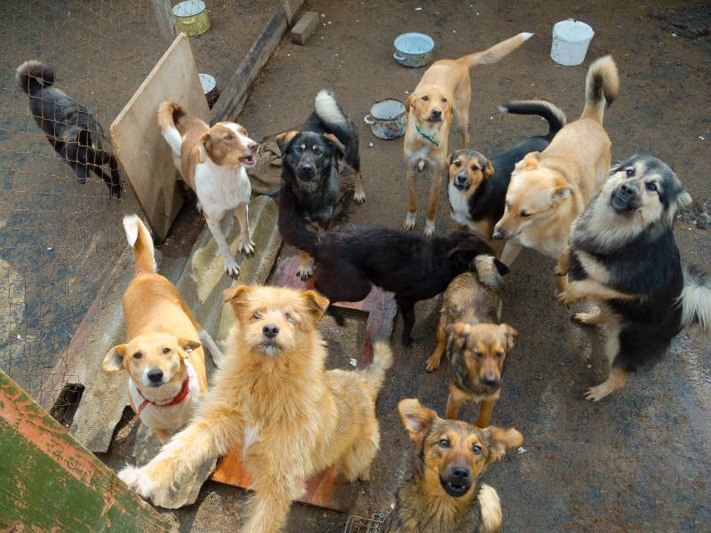

Conócenos
Fundación Patitas es una organización sin fines de lucro que se forma con el objetivo de mejorar la calidad de vida de las mascotas abandonadas o nacidas en la calle y a la vez disminuir la sobrepoblación a través de la difuión, educación y concientizar sobre la temática de Tenencia Responsable en nuestro país.
Misión
Rescatar, Esterilizar, Entregar rehabilitación a las mascotas que han sufrido Abandono, Maltrato y Abuso, para luego darles la oportunidad de ser adoptados por una familia. Además de Educar, Difundir y Fomentar la Tenencia Responsable.
Conocer másVisión
Nuestra aspiración es Terminar con el Maltrato, Abandono y ponerle fin al concepto de "objeto" de las mascotas así como también Promover la Tenencia Responsable Educando y Difundiendo en la sociedad.
Conocer más